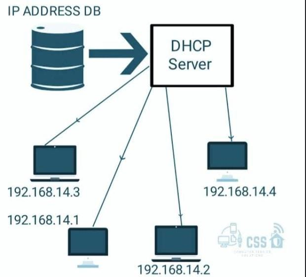
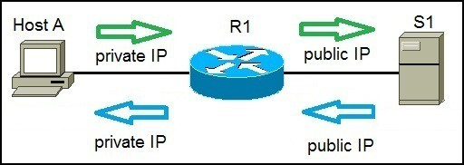
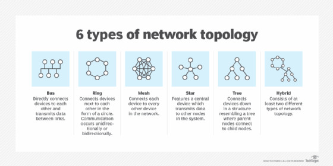

BASICS OF IP Address
An IP address is a unique numerical label assigned to each device connected to a network. It helps devices communicate with each other over the internet or a local network
Two types of IP address
1. IPv(internet protocol version 4)
2. IPv6 (internet protol Version 6)
IPv4most commonly used, Uses 4 sets of numbers each ranging from 0-255, there are ground 4.3 billion unique IPv4 address but they are running out due to the growth of the internet.
IPv6newes and longer, uses 8 sets of hexadecimal numbers, Supports toillions of addresses to accommodate internel growth.
public Vs Private IP Addresses
Public IP addressused to connect to the internet, unique world wide Public IPs are assigned by Internet Service providers (ISP)
Private Ip addressUsing within local networks not accessible from the internet , Private IPs are used in home or office networks
Static Vs Dynamic IP Addresses
Static IP addressPermanent IP address; does not change,Assigned by Manually configured, Static IPs are used for web servers and remote access.<\p> Dynamic IP address
changes over time, Dynamic IPs are used by home users to save cost
DHCP
DHCP stands for Dynamic Host Configuration Protocol. It's a network protocol that automatically assigns IP addresses and other network settings to devices on a network.
Key Features of DHCP
1. Dynamic IP allocation:DHCP assigns IP addresses to devices for a specified period, known as a lease.
2. Automatic configuration:DHCP provides devices with IP addresses, subnet masks, default gateways, and other network settings.
3. Centralized management:DHCP allows network administrators to manage IP address allocation and other network settings from a central location.
How DHCP Works
1. Device discovery:A device connects to the network and sends a DHCP request.
2. DHCP offer:The DHCP server offers an IP address and other network settings to the device.
3. Device acceptance:The device accepts the offered IP address and other network settings.
4. Lease renewal:The device renews its IP address lease periodically.
Benefits of DHCP
1. Simplified network management:DHCP reduces the need for manual IP address configuration.
2. Improved scalability:DHCP allows for efficient IP address allocation in large networks.
3. Increased flexibility:DHCP enables devices to move between networks without requiring manual configuration.
Application of DHCP
1. Enterprise and home networks 2. ISP managed networks 3. Network management 4. Wireless networs
Common DHCP Terms
1. DHCP server:The device that assigns IP addresses and other network settings.
2. DHCP client:The device that requests IP addresses and other network settings.
3. Lease:The period of time for which a device is assigned an IP address.
4. Scope:The range of IP addresses available for assignment by the DHCP server.
NAT
NAT (Network Address Translation) lets multiple devices on a local network share a single public IP address to access the internet. Routers commonly use it to conserve public IPs and enhance security by hiding internal network details.
WorkingNAT allows devices on a private network to communicate with the internet by translating their private IP addresses to the router's public IP address.
Types of NAT
Static NAT One-to-one mapping of private to public IPs, used for making internal servers accessible externally (e.g., web or FTP servers).
Dynamic NAT Maps private IPs to a pool of public IPs, assigning an available one for each connection. The same public IP isn't guaranteed each time.
PAT/OverloadingMaps many private IPs to a single public IP using different port numbers, allowing multiple devices to share one public IP (common in home routers).
NAT64 Translates between IPv6 and IPv4 addresses, enabling communication between IPv6 clients and IPv4 servers.
Advantages
Saves Public IPsNAT lets many devices share one internet address.
Boosts SecurityIt hides your internal network, blocking easy external access.
Simplifies Setup Managing internal IP addresses becomes less complex.
Aids IPv6 Transition NAT helps newer IPv6 devices work with older IPv4 systems.
Disadvantages of NAT
Breaks Direct ConnectionsNAT hinders some direct peer-to-peer apps.
Troublesome ProtocolsIt complicates protocols that include IP addresses in their data.
Performance HitTranslation can slow down busy networks.
Limits Incoming Access Incoming connections to internal devices are blocked by default.
Topologies
Network topology refers to the physical or logical arrangement of devices in a network
Types of network topologies
1.bus topology:All devices are connected to a single cable or backbone
2.Star topology: Devices are connected to a central devices or hub
3.Ring topology: Devices are connected in a circular configuration
4.Mesh topology:Each devices is connected to every other device
5.Tree topology :A combination of bus and star topology
6.Hybrid topology:A combination of different topologies
Advantages and disadvantages
Bus topology: simple to install,but difficult to troubleshootstar topology:easy to add or remove devices but depend on the central devices
mesh topology: highly reliable, but expensive and complex
Ring topology: performance can degrade with more devices but it can offer efficient data transmission